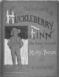

picture courtesy of "Mark Twain in His Times"
"In the small town of Hannibal, Missouri, when I was a boy everybody was poor and didn't know it; and
everybody was comfortable and did know it. And there were grades of society--people of good family, people
of unclassified family, people of no family...the class lines were quite clearly drawn and the familiar social life
of each class was restricted to that class...we lived in a slaveholding community...However, there was nothing
about the slavery of the Hannibal region to rouse one's dozing human instincts to activity. It was the mild
domestic slavery, not the brutal plantation article...to our whites and blacks alike the southern plantation was
simply hell." Autobiography, 33

Back to Florida | On to Mississippi River